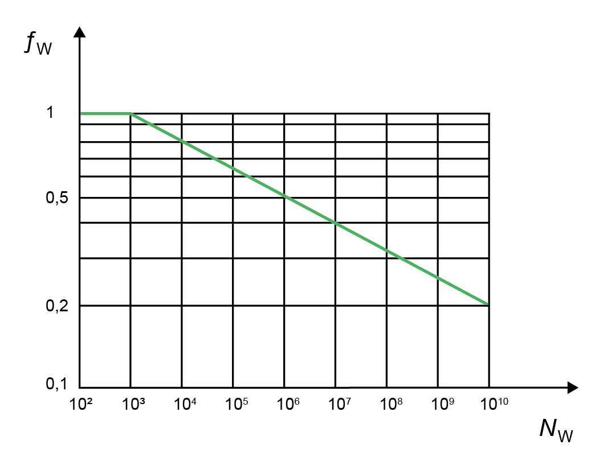

|
|
|


DIN 6892 方法 B 的附加输入
如果选择依据 DIN 6892 B 的计算方法，可以在界面中输入这些值：
- 轴上的倒角
- 轮毂上的倒角
- 轮毂小外径 D1
- 轮毂大外径 D2
- 外径 D2 的宽度 c
- 距离 a0（见图 35.1）
- 扭矩曲线：指示这是否为交变扭矩。
注意：
如果存在交变扭矩，您也可以在此处定义反向扭矩。如果该反向扭矩大于最小有效摩擦力矩（TmaxR ≤ TRmin*qeq；qeq = 0.5），则载荷方向变化系数 fw 设为 1。
如果（TmaxR > TRmin*qmax 且 Tmax > TRmin*qmax；qmax = 0.8），则最大转矩也大于最小有效摩擦力矩。在这种情况下，定义载荷方向变化系数时会考虑载荷方向变化的频率（根据图：fw<1）。
如果存在交变扭矩且未超过标准的极限值，即条件未满足时，载荷方向变化系数 fw 的值根据下图（DIN 6892 标准表 7）确定，因为标准中未对此作出描述。

图 35.2：交变载荷的载荷方向变化系数，图 6，DIN 6892
- 使用系数 q = 0.5 进行等效扭矩的计算。该公式对应于最大转矩公式，因此 (TeqR > TRmin*q; q=0.5)。
- 载荷方向变化的频率：在这种情况下，您在整个使用寿命期间输入扭矩变化的次数（但仅在存在交变扭矩时）。

图 35.3：峰值载荷系数，图 7，DIN 6892
注意：
绿色线表示韧性材料，蓝色线表示脆性材料。
English Original
Additional inputs for DIN 6892 Method B
If you select the calculation method according to DIN 6892 B, you can input these values in the screen:
- Chamfer on shaft
- Chamfer on hub
- Small external diameter of hub D1
- Large external diameter of hub D2
- Width c for external diameter D2
- Distance a0 (see Figure 35.1)
- Torque curve: indication of whether this is alternating torque.
Note:
If alternating torque is present, you can also define the backwards torque here. If this backwards torque is greater than the minimum effective frictional torque (TmaxR ≤ TRmin*qeq; qeq = 0.5), the load direction changing factor fw is set to 1.
If (TmaxR > TRmin*qmax und Tmax > TRmin*qmax; qmax = 0.8), the maximum torque is therefore also greater than the minimum effective frictional torque. In this case, the frequency of the changes in load direction is taken into account when defining the load direction changing factor (from diagram: fw<1).
If alternating torque is present and the limiting values of the standard are not exceeded, the conditions not met, the value for the load direction changing factor fw is determined according to the below diagram, Table 7 of the DIN 6892 standard as this is not described in the standard.
Figure 35.2: Load direction changing coefficient for alternating load, Figure 6, DIN 6892
- Use coefficient q = 0.5 to perform a calculation with the equivalent torsional moment. The formula corresponds to the formula with maximum torsional moment, therefore (TeqR > TRmin*q; q=0.5).
- Frequency of the changes in load direction: In this case, you input the number of torque changes throughout the entire service life (but only if alternating torque is present).
Figure 35.3: Peak load factor, Figure 7, DIN 6892
Note:
The green line represents a ductile material and the blue line represents a brittle material.